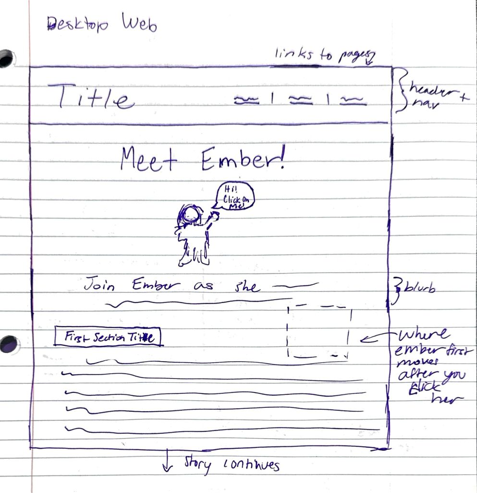
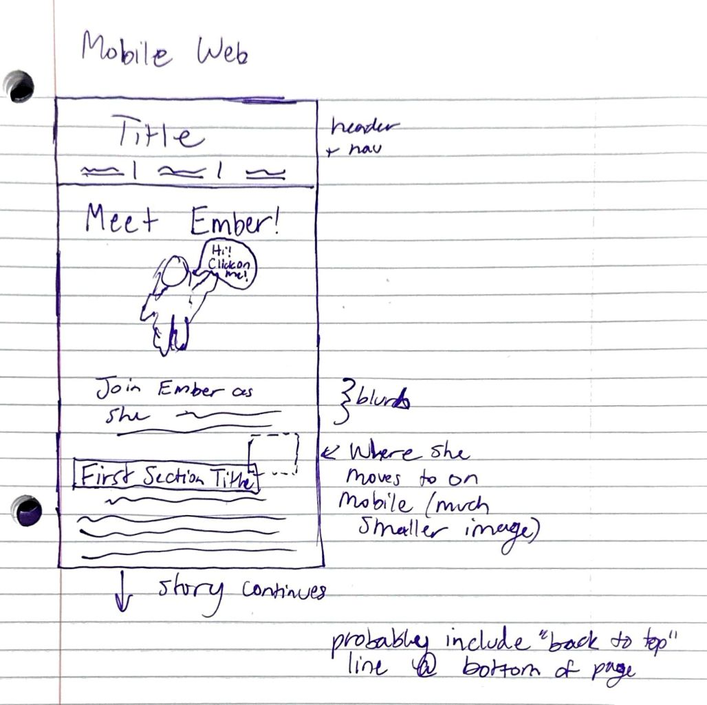

High Concept
The base of this page will be a story page about a character. When the player clicks on the image of the character, it will move hiding in to a new location within the page and a hint will be displayed about where they are. The player can then find them in their new location and if they click them again they will move to another location.
Genre
Story/Narrative, Point & Click
Platform
Primarily designed for desktop web, but also functional on mobile web.
Story
The story that is on the page is the character's story, and the character moving around the screne will guide the player to different sections of the story (not necessarily following the story linearly) that they will read.
Aesthetics
Cozy/Cartoony. The only main graphic on the page will be the character (though there might be other smaller graphics) so the graphic style/feel will mostly be determined by the style of the webpage, which will match the character's design.
Gameplay
Overall the character moving around the screen is a guide for how the player is meant to experience the story on the page, basically telling them what order to read different sections in. The player can follow the character's guide, or they could just decide to read the story in whatever order they want. To teach the player how to follow the character around the screen, the character will start at the top of the screen with a "Click Me!" text bubble. Once the player clicks on them, they will move slightly down the page to the first story section on the page, so that it is easy for the player to find them the first time.
Mockups


Other
Nothing else at this time.